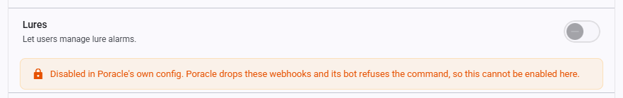

Site Settings¶
Site settings are admin-configurable runtime settings stored in the poracle_web.site_settings database table. Unlike appsettings.json configuration which requires a restart, site settings are changed at runtime via the Admin > Settings page and take effect immediately.
First-time setup
On first startup after upgrade, the SettingsMigrationStartupService automatically migrates any existing data from the deprecated pweb_settings key-value store to the structured site_settings table. This is idempotent and safe to run multiple times.
How it works¶
- Settings are stored in the
poracle_web.site_settingstable with columns:category,key,value, andvalue_type. - The admin panel at Admin > Settings provides a grouped UI for editing all settings.
- Changes take effect immediately — no app restart is needed.
- Boolean settings use
"True"/"False"string values. - Keys beginning
disable_store the disabled state, but the admin UI shows them as positive switches — the toggle is on when the feature is available. The stored value is inverted on read and write, so what the API and the tables below describe is the key, not the switch. - Some settings have conditional visibility (e.g.,
allowed_role_idsonly appears whenenable_rolesis enabled).
Branding¶
Customize the appearance and navigation of your PoracleWeb.NET instance.
| Key | Label | Type | Description |
|---|---|---|---|
custom_title |
Site Title | string | Name shown in the browser tab and page header. One of the six keys served without authentication, alongside allowed_languages, enable_discord, enable_telegram, favicon_url and signup_url. |
header_logo_url |
Header Logo URL | url | URL for a custom logo image in the header (replaces the default Pokeball). Leave empty for the default logo. |
hide_header_logo |
Hide Header Logo | boolean | Hide the logo from the header entirely. |
favicon_url |
Favicon URL | url | URL for the browser-tab icon. Square image recommended (32×32 minimum). Supports .ico, .png, and .svg. Leave empty to use the bundled default. Also loads on the public login page. See Favicon caveats below. |
custom_page_name |
Nav Link Label | string | Label for a custom navigation link in the sidebar (e.g., "Back To Map"). Leave empty to hide. |
custom_page_url |
Nav Link URL | url | URL the custom nav link points to. |
custom_page_icon |
Nav Link Icon | string | FontAwesome class for the nav link icon (e.g., fas fa-map). |
Favicon caveats¶
- Browser cache. Browsers cache favicons aggressively and often ignore normal reloads. After changing
favicon_url, users must clear their browser cache or hard-refresh (Ctrl+F5 / Cmd+Shift+R) to see the new icon. Mobile browsers may require removing and re-adding any home-screen bookmark. - Content Security Policy. If the instance is served behind a reverse proxy or CDN that adds a CSP header, the favicon URL's origin must be allowed by the
img-srcdirective. When the fetch is blocked, the browser silently falls back to the bundled default — the preview in the admin UI will show the error state to help diagnose this. - Supported formats.
.ico,.png, and.svgare reliably supported by current browsers. Avoid animated GIFs — support is inconsistent. - Hosting. Any HTTPS URL works. If you want to serve the favicon alongside PoracleWeb itself, drop the file into the container's
wwwroot/and reference it by relative path (e.g.my-favicon.png).
Alarm Types¶
Control which alarm categories are available to users. Disabling a type hides it from the sidebar navigation and prevents access.
| Key | Label | Type | Description |
|---|---|---|---|
disable_mons |
Pokémon | boolean | Hide Pokémon alarms from all users. The page, the sidebar item and the API all go; rules already stored stay dormant and return if you switch it back on. |
disable_raids |
Raids | boolean | Hide raid alarms from all users. The page, the sidebar item and the API all go; rules already stored stay dormant and return if you switch it back on. |
disable_quests |
Quests | boolean | Hide quest alarms from all users. The page, the sidebar item and the API all go; rules already stored stay dormant and return if you switch it back on. |
disable_invasions |
Invasions | boolean | Hide invasion alarms from all users. The page, the sidebar item and the API all go; rules already stored stay dormant and return if you switch it back on. |
disable_lures |
Lures | boolean | Hide lure alarms from all users. The page, the sidebar item and the API all go; rules already stored stay dormant and return if you switch it back on. |
disable_nests |
Nests | boolean | Hide nest alarms from all users. The page, the sidebar item and the API all go; rules already stored stay dormant and return if you switch it back on. |
disable_gyms |
Gyms | boolean | Hide gym alarms from all users. The page, the sidebar item and the API all go; rules already stored stay dormant and return if you switch it back on. |
disable_fort_changes |
Fort Changes | boolean | Hide fort-change alarms from all users. The page, the sidebar item and the API all go; rules already stored stay dormant and return if you switch it back on. |
disable_maxbattles |
Max Battles | boolean | Hide max-battle alarms from all users. The page, the sidebar item and the API all go; rules already stored stay dormant and return if you switch it back on. |
disable_showcase |
Pokéstop Events | boolean | Hide Showcase, Kecleon and Gold Stop alarms from all users. The page, the sidebar item and the API all go; rules already stored stay dormant and return if you switch it back on. PoracleNG's own [general] disable_showcase also forces this off, and a PoracleNG older than 5.2.0 cannot serve the page at all — in either case the three events remain available from the invasion add dialog. |
A disabled type disappears completely
The sidebar item, the dashboard card and the page all go, and every endpoint for that type answers 403 — reads, writes and deletes alike. Admins are not exempt.
Rules a user already had are not deleted. They stay in Poracle's database, dormant: a disabled type's alerts are dropped upstream, so nothing fires. Switch the type back on and everything reappears exactly as it was.
Poracle can switch these off too, and it wins
Poracle has its own per-type flags (disable_pokemon, disable_raid, disable_quest, disable_invasion, disable_lure, disable_nest, disable_gym, disable_max_battle, disable_fort_update). When one of those is set, its processor drops the webhook and its bot refuses the command, so the type can never fire — and this site now honours that. A type is off if either side disables it.
The toggle for a type Poracle has disabled renders off and greyed, with a note saying where the decision came from; switching it on here would promise something every write refuses. This is also the case where leaving existing alarms deletable matters most: Poracle's bot refuses the matching command while the type is off, so this page is the only place left to clean up.

Your own toggles still work for everything Poracle leaves enabled, and they gate features Poracle has no opinion about.If Poracle is unreachable, or too old to report its flags, the settings on this page are in sole charge — the gate fails open rather than disabling every type because a server was down.
Features¶
Toggle user-facing features on or off.
| Key | Label | Type | Description |
|---|---|---|---|
disable_areas |
Areas | boolean | Prevent users from managing their area subscriptions. |
disable_profiles |
Profiles | boolean | Prevent users from creating and switching alarm profiles. |
disable_location |
Location | boolean | Gates the whole location API, not just the pin. Users cannot set their pin, and saved places, static and distance map images, and the weather lookups on the dashboard all stop with it. Since "Near a place" delivery scope measures from a saved place or the pin, alarms already using it keep working but nothing new can be pointed at a place. |
disable_nominatim |
Geocoding | boolean | Stops all outbound geocoding. The address search and reverse lookup return 403, and the location dialog hides its search box. Users can still set a pin by coordinates or on the map. Turn this on if you do not want your instance making requests to a third-party geocoder. |
disable_update_check |
Do not check for updates | boolean | Stops the version check against api.github.com and raw.githubusercontent.com, which runs when an admin opens the Versions card and is cached six hours afterwards. Two anonymous GETs, no identifiers and no payload. With it on, the Versions card on Admin > Settings still reports the running versions but cannot say whether they are current. |
disable_user_geofences |
Custom Geofences | boolean | Hides the My Geofences page and the admin review queue, and 403s the create, rename, import, submit, activate and deactivate endpoints. Delete is deliberately left open, so a user can still clear out a geofence they no longer want. Geofences that already exist keep being served in the geofence feed and keep matching. See Admin operations. |
enable_templates |
Templates | boolean | Allow users to choose notification message templates. |
allowed_languages |
Allowed UI Languages | csv | Comma-separated language codes users can select (e.g., en,de,fr). Leave empty to show all 11 languages. Applies to the signed-out login page as well. English is always available. |
Beneath that row the page reports Poracle's own configured locale, which is the language a first-time visitor lands on when neither a stored choice nor their browser can answer. It is read from Poracle and cannot be set here — see Values that are not settings.

Maps¶
Which tiles every map on the site draws with: the areas map, the location picker, the geofence detail map and the geofence thumbnails.
If you just want working maps, do nothing
A fresh install draws OpenStreetMap without any configuration. Everything below is for choosing something else.
Settings¶
| Key | Label | Type | Description |
|---|---|---|---|
basemap_provider |
Basemap Provider | string | Provider id: osm, esri-street, esri-canvas, esri-imagery, carto-positron, carto-voyager, stadia-smooth, or custom for your own tile URL. Empty means nothing has been chosen — see What "not set" means. |
basemap_key |
Basemap API Key | string | API key for the chosen provider. Required by CARTO and Stadia, ignored by the rest. Not a secret — see The key is public. |
basemap_name |
Custom Basemap Name | string | What custom is called in the layers menu on each map. Empty renders as "Custom", which tells a viewer nothing about the map they are being offered. Capped at 40 characters and always rendered as text, never as markup. |
basemap_url |
Basemap Tile URL | url | Tile template for custom. Must be an absolute http(s) URL. Put {key} where the provider expects the key; {s}, {z}, {x}, {y} and {r} are Leaflet's. |
basemap_url_dark |
Basemap Tile URL (Dark) | url | Optional. Used in place of basemap_url while a viewer has the dark theme on. |
basemap_attribution |
Basemap Attribution | string | Attribution for custom. Rendered as plain text, so a link in it shows as text rather than a link. Built-in providers carry their own and ignore this. |
Choosing a provider¶
Pick the provider first. What you fill in after that follows from the pick, and the admin page hides the fields that do not apply — so the section never shows you a box with no bearing on your choice.
| Provider | What to fill in |
|---|---|
| OpenStreetMap, Esri Streets, Esri Gray Canvas, Esri World Imagery | Nothing. They are keyless and carry their own URL, attribution and zoom limit. |
| CARTO Positron, CARTO Voyager, Stadia Alidade Smooth | Basemap API Key, and nothing else. |
| Custom tile URL | Name, Tile URL, optionally a dark URL, and Attribution. The key field appears only if your URL contains {key}. |
Picking a name sets the URL, the attribution and the zoom limit together, so there is one decision rather than three chances to get it wrong.
| Id | Provider | Needs a key | Dark variant | Max zoom |
|---|---|---|---|---|
osm |
OpenStreetMap | no | — | 19 |
esri-street |
Esri Streets | no | — | 19 |
esri-canvas |
Esri Gray Canvas | no | yes | 16 |
esri-imagery |
Esri World Imagery (satellite) | no | — | 19 |
carto-positron |
CARTO Positron | yes | yes (Dark Matter) | 20 |
carto-voyager |
CARTO Voyager | yes | yes (Dark Matter) | 20 |
stadia-smooth |
Stadia Alidade Smooth | yes | yes | 20 |
A provider with no dark variant reuses its light tiles when the theme is dark. Esri Gray Canvas stops at zoom 16, which is further out than the location picker usually wants — the map simply will not zoom past it while that basemap is active.
A key unlocks every style in the same family, so a CARTO key gives you both CARTO entries. It never unlocks another vendor's: one key cannot be a CARTO key and a Stadia key at once, so the styles you have no key for are not offered.
What "not set" means¶
Leaving the provider empty is a real state, not a missing one — it is what every install configured before this setting existed has. It resolves by what else is set:
| Also set | Resolves to | Why |
|---|---|---|
| nothing | OpenStreetMap | A provider that needs no key, rather than one that reports a missing key nobody asked for. |
basemap_key only |
CARTO Positron | Before the provider setting existed, a key was the only way to say "use CARTO". Upgrading does not move a working CARTO install onto something else. |
basemap_url only |
Custom | Same reason: a tile URL on its own meant "use this URL". |
The admin page says which of these applies, so you can leave it or make it explicit.
The key is public¶
basemap_key travels in every tile URL the browser requests, so every signed-in user receives it.
That is how a client-side basemap works and there is no way around it; restrict the key by referrer
or domain at the provider rather than trying to hide it.
It is served to non-admins deliberately, under the basemap_ prefix in the settings allowlist.
Withholding it would protect nothing and would leave every non-admin looking at a different basemap
from the admin checking the site.
When the chosen basemap cannot be drawn¶
Maps fall back to OpenStreetMap, and both the Maps section and the layers menu say so. Two things cause it:
- The provider needs a key and none is set. CARTO answers 200 to a keyless request and
returns working tiles with
API KEY REQUIREDdrawn into the image, so nothing logs and no health check notices (#842). Rather than serve that, the site does not request it. - The provider cannot be resolved at all —
customwith a blank or malformed tile URL, which is what picking it and saving before filling the field leaves behind, or a provider id this build does not know after a downgrade.
Neither produces an error to notice. A URL that is not a tile template is simply never requested.
A wrong key is not detectable
Only a missing key can be caught. CARTO answers 200 and watermarks identically whether the key is absent or invalid, so a typo gets you a watermarked map with nothing to report it. If the watermark persists after setting a key, check the key itself.
Each viewer can choose their own¶
From the layers button in the top-right corner of any interactive map. The choice is theirs alone and is kept in their browser, like the theme and the accent colour. On offer are the keyless built-ins, the custom URL if one is set — under the name you gave it — and the keyed styles in whichever family your key belongs to.
A viewer's own choice outranks this setting, including yours
The menu's first entry is Site default, which names the provider set here and clears the
viewer's choice. This matters most for whoever configures the setting: click the layers button
once while testing, and every later change to basemap_provider will appear to do nothing on
your own screen, because you are no longer on the site default. The Maps section says so when it
applies to you.
OpenStreetMap and the referrer¶
OSM's tile usage policy refuses a request it
cannot identify, and this site sends Referrer-Policy: same-origin so that remote image hosts cannot
learn where a private instance lives. Refererless tile requests come back 200 with "Access
blocked" drawn into the image — the CARTO watermark's failure mode wearing a different hat.
So the OpenStreetMap entry sets referrerPolicy="origin" on its own tile images: your site's host, no
path, on map tiles alone. Every other remote request the page makes — uicons, Discord avatars, fonts
— stays as unidentified as before, and nothing else in the catalogue needs the exception.
Since OpenStreetMap is what an unconfigured install draws, that disclosure is the default. If you would rather your instance's address never reached a tile provider, pick one that needs neither a key nor a referrer: Esri Streets, Esri Gray Canvas and Esri World Imagery all return the same bytes with or without one. OSM also asks that heavy users run their own tiles rather than lean on its volunteers, which is worth knowing if your instance is a busy one.
Custom tile URLs¶
The CARTO parameter is key, not api_key
Both spellings return 200 and both watermark, so it is easy to "fix" this and change nothing. The
built-in CARTO entries have it right; only a custom URL can get it wrong.
Custom tile URLs must be HTTPS
The site's Content-Security-Policy allows images from any https: origin and nothing over plain
http:. A custom tile server on http:// is blocked by the browser with no error on the page —
the map simply stays blank.
These are the same tiles ReactMap draws
OSM, Satellite and Dark Matter use the URLs from ReactMap's config/default.json, and CARTO
Voyager uses its voyager_labels_under variant, so the same basemap looks the same on both
sites. basemap.service.spec.ts pins those four URLs against a catalogue edit drifting away from
it. The one difference is the key: the CARTO entries here carry one, which is what keeps the
watermark off them.
Administration¶
Access control.
| Key | Label | Type | Description |
|---|---|---|---|
enable_roles |
Enable Role-Based Access | boolean | Only allow users with specific Discord roles to log in. Requires Discord:BotToken and Discord:GuildId in appsettings. |
allowed_role_ids |
Allowed Role IDs | csv | Comma-separated Discord role IDs (e.g., 123456789,987654321). A user needs at least one of these roles to log in. Leave empty to allow all. Only visible when enable_roles is enabled. |
Role-based access prerequisites
Role-based access requires Discord:BotToken and Discord:GuildId to be configured in appsettings. Without these, role checks cannot be performed and the setting has no effect.
Formatting allowed_role_ids
Enter the IDs bare: 123456789,987654321. Surrounding quotes are stripped, but any entry that is not a numeric Discord role ID is ignored and logged as a warning. If nothing usable is left, non-admin logins are denied with role_check_failed rather than silently allowing everyone. Admins can always log in, so a bad value can be corrected from the admin panel.
Discord¶
| Key | Label | Type | Description |
|---|---|---|---|
enable_discord |
Enable Discord Login | boolean | Allow Discord sign-in. Requires Discord:ClientId and Discord:ClientSecret in appsettings. Nothing here affects PoracleNG's bot delivery — it only controls the login button. |
Admins are exempt
The check runs only for non-admins, and only when the value is explicitly "false". An absent key
allows Discord login. Admins can always sign in with Discord, so switching this off by mistake is
recoverable from the admin panel rather than a lockout.
Telegram¶
Configure Telegram authentication alongside or instead of Discord.
| Key | Label | Type | Description |
|---|---|---|---|
enable_telegram |
Enable Telegram Login | boolean | Allow users to log in and manage alarms via Telegram. |
telegram_bot |
Bot Username | string | Telegram bot username (without the @ prefix). Used as a fallback — see the note below. |
Backend configuration also required
Enabling Telegram in site settings also requires Telegram:BotToken and Telegram:BotUsername to be set in appsettings.
telegram_bot is a fallback, not an override
The login widget takes its bot username from Telegram:BotUsername (TELEGRAM_BOT_USERNAME) when
that is set, and falls back to this setting when it is not. Configuration deliberately wins: before
v2.14.0 nothing read this field at all, so a deployment may hold a stale value someone typed in while
it was inert, and letting that override a working environment variable would break Telegram login.
Authentication¶
Runtime toggles for the generic external SSO / OIDC sign-in flow. See External SSO / OIDC for the full provider setup and OIDC Refresh Tokens for silent session refresh.
| Key | Label | Type | Description |
|---|---|---|---|
enable_oidc |
Authentication Mode (Local ⇄ SSO) | boolean | Controls the admin Authentication Local ⇄ SSO mode switch. Opt-in: SSO is active only when this is explicitly the string "true". When the setting is absent (or "false"), the instance stays in Local mode — this is the default. Admins can always sign in via local auth even when SSO is on, so they can switch the mode back if the provider breaks. |
enable_oidc_slo |
Single Logout (Sign Out Everywhere) | boolean | Toggles RP-initiated single logout ("Sign out everywhere"). When absent this is on once an end-session endpoint is configured (OIDC_END_SESSION_URL in appsettings). Set to "false" to disable single logout and fall back to a local logout. |
Absent = default
These two settings differ from most boolean toggles on this page: their behaviour depends on whether the key is present. enable_oidc defaults off (Local mode) and must be explicitly "true" to enable SSO. enable_oidc_slo defaults on once an end-session endpoint is configured in appsettings, and only turns off when explicitly set to "false".
Silent refresh has no runtime toggle
Whether silent session refresh is active is controlled solely by the OIDC_USE_REFRESH_TOKENS appsettings flag — there is intentionally no enable_oidc_refresh site setting. Refresh is coupled to the per-login JWT lifetime, so it's a deploy-time decision (turning it off at runtime would strand the short-lived tokens of users who are already signed in). See OIDC Refresh Tokens.
Analytics & Links¶
| Key | Label | Type | Description |
|---|---|---|---|
signup_url |
Signup URL | url | External registration page. When set, someone who reaches the login page without a Poracle account gets a sign-up button pointing here. Served on the public login page before anyone signs in, so treat it as public. Leave empty to hide the button. |
Retired keys¶
Ten keys were withdrawn from the admin UI once it became clear nothing in the product read them. They saved, persisted and read back while their descriptions promised behaviour the app does not have:
disable_geomap, disable_geomap_select, register_command, location_command, provider_url,
gAnalyticsId, patreonUrl, paypalUrl, site_is_https, debug.
Existing rows are left in site_settings rather than deleted, and the settings UI filters them out of
its "Other" catch-all. Nothing reads them, so their values have no effect either way. See #547, #560
and #589.
disable_geomap and disable_geomap_select are legacy PoracleJS keys describing a map picker this app
does not have. provider_url still exists in the Poracle bot's own config, which is where the geocoder
URL is actually read from — the site setting was a duplicate that fed nothing.
Icon Repository¶
Icon URLs are configured through the visual Icon Repository picker in the admin settings UI. Picking a pack writes all six keys at once; you can also set them individually.
| Key | Type | Description |
|---|---|---|
uicons_pkmn |
url | Base URL for Pokémon icon images. |
uicons_gym |
url | Base URL for gym icon images. |
uicons_raid |
url | Base URL for raid icon images. Egg icons are read from raid/egg/. |
uicons_reward |
url | Base URL for quest reward images. Items are read from reward/item/. |
uicons_type |
url | Base URL for Pokémon type icons, used by the filter chips. |
uicons_invasion |
url | Base URL for Team Rocket grunt artwork. |
All six must point somewhere. They are independent rows, so setting five of them leaves the sixth on the built-in default — which is how type icons on a fully configured instance ended up resolving to a repository that had been deleted. The picker writes every key precisely so this cannot happen; a hand-edited row can still get it wrong.
uicons_invasion is new. Grunt icons were built from a base hardcoded in the invasion pages rather
than read from a setting, so they ignored whichever pack the operator had chosen and went on
requesting the deleted one. They now come from this key like everything else.
There is no uicons_item. Items live under reward/item/ in every UICONS pack, so the item URL is
built from uicons_reward. A row of that name was read for a while and never used; if your database
still has one, nothing reads it.
The pack list¶
The picker starts with four packs, all in the UICONS format:
- Nileplumb (Home) — Pokémon HOME style
- Nileplumb (Shuffle) — Pokémon Shuffle style
- Jms412 (Home) — Alternative HOME style, and what an unconfigured install uses
- Jms412 (Pokedex) — Pokédex style
The list is editable. Add pack takes a name and the URL of a pack's UICONS folder — the one with
pokemon/, gym/ and type/ inside it — and each entry has a pencil and a bin. Your own pack on your
own network is as valid an entry as a GitHub one; plain http:// is accepted for exactly that reason.
Adding a pack requires Check pack to pass first. It loads one file per category from the URL you
gave and refuses the pack if any category comes back with nothing, which is the failure this is here
to prevent: a URL that looks right, saves cleanly, and renders empty squares. It uses image loads
rather than reading the pack's index.json, because that would be a cross-origin request and a pack
served off your own web server very likely sends no CORS headers — refusing it would be refusing
something that works.
Removing a pack does not change your icon settings. If you remove the pack the site is currently using, the icons carry on exactly as they were; the pack simply stops being offered, and reappears as a card marked In use that you can add back. The same card shows up when an instance is pointed at a pack that was never in the list, so a hand-configured instance does not look unconfigured.
Restore built-in list puts the four back. An empty list stays empty — it is a choice, not a missing value — so the four do not creep back on the next page load.
The list is stored in the icon_repos setting as a JSON array of { name, base }. It is admin-only,
and the API refuses a value it could not render: a base must be an absolute http or https URL, and
the list holds at most 25 entries.
Whitewillem (Ingame) was removed: the whitewillem/PogoAssets repository no longer exists on
GitHub. It was both the first entry in this list and the source of every built-in default, so an
instance that had never touched these settings was pointing at a dead host. That removing it took a
release is why the list is editable now. See #877.
Internal Settings¶
The following settings exist in the database but are not shown in the admin settings UI. They are managed automatically by the application and should not be modified manually.
migration_completed is blocked by the API for both reads and writes. quick_picks_seeded is not: the
SPA's auto-seed guard has to read it, so admins receive it from GET /api/settings and it is hidden in
the UI layer instead. Neither is visible to non-admins.
| Key | Category | Description |
|---|---|---|
migration_completed |
system | Sentinel flag indicating that the one-time data migration from pweb_settings to structured tables has completed. Set automatically by SettingsMigrationStartupService. |
quick_picks_seeded |
admin | Sentinel flag indicating that the built-in quick picks have been created once. Written by POST /api/quick-picks/seed after a successful seed, and backfilled at startup for installations that already hold global picks. Without it an admin who deliberately deletes every preset gets them all back on their next visit. Admin-readable via the API (the SPA guard needs it) but hidden from the settings UI. |
Values that are not settings¶
Some keys arrive on the settings response without being stored anywhere. They are projections of another system's configuration, present so the SPA can read them like any other value.
| Key | Source | What it is |
|---|---|---|
poracle_locale |
Poracle's general.locale |
The language a first-time visitor lands on, when neither a stored choice nor their browser can answer. See Internationalization. |
poracle_alert_languages |
availableLanguages on Poracle's /api/config/poracleWeb |
The language codes Poracle will accept for a user's alert language, comma-separated. Absent when Poracle restricts nothing, which is also what a server too old to report the field sends — the SPA reads absent as "offer everything". Nothing to do with allowed_languages, which restricts the display language. |
Both are read fresh from Poracle on one config call, cached five minutes, and cannot be written.
PUT /api/settings/poracle_locale and PUT /api/settings/poracle_alert_languages answer 400, and the
admin page renders the locale as a read-only line under Allowed UI Languages rather than as an editable
box. The refusal matters more than it looks: a stored row would take precedence over the projected
value, so a single accidental save would pin the language default permanently and stop the site
tracking Poracle's configuration at all.
There is also GET /api/settings/upstream-disabled, which lists the disable_* keys Poracle's own
config is forcing off. Any signed-in user can read it — the nav and the route guards need it — and it
is empty when Poracle is unreachable.
Sensitive Settings¶
Credential-bearing rows carried over from PoracleJS installs. They are hidden from the admin settings UI groups but are readable by admins through the API. Prefer configuring the equivalents via appsettings environment variables instead.
| Key | Category | Description |
|---|---|---|
api_address |
api | Poracle API address. Prefer Poracle:ApiAddress in appsettings. |
api_secret |
api | Poracle API shared secret. Prefer Poracle:ApiSecret in appsettings. |
telegram_bot_token |
telegram | Telegram bot token. Prefer Telegram:BotToken in appsettings. |
scan_dbhost, scan_dbport, scan_dbname, scan_dbuser, scan_dbpass |
other | Scanner database host, port, name, user and password. Prefer ConnectionStrings:ScannerDb in appsettings. |
cf_id, cf_secret |
other | Cloudflare Access service token used by some PoracleJS deployments. |
Neither the scanner keys nor the Cloudflare pair appear in SettingsMigrationService.CategoryMap, so rows migrated from pweb_settings land in the catch-all other category.
GET /api/settings decides what a non-admin sees with an allowlist, not a denylist: the exact keys
in SettingsController.UserVisibleKeys plus anything beginning basemap_, disable_, enable_ or
uicons_.
Everything else is admin-only. That direction matters — the previous denylist named a key scan_db
that matches no real row and never mentioned cf_id / cf_secret, so a scanner password and a
Cloudflare token were served to every signed-in session. With an allowlist, a new credential key is
hidden until someone deliberately adds it.